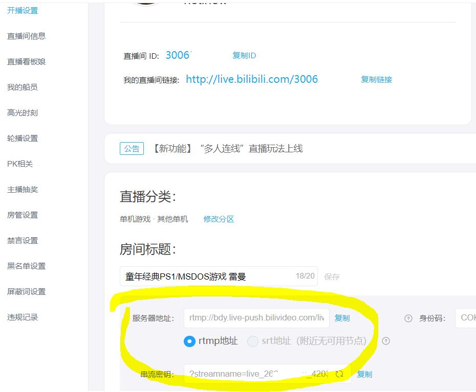

Linux/Docker实现bilibili推流
在B站做一个7*24小时的直播小电台。
安装流程：
首先是Kplayer的官方GitHub：bytelang/kplayer-go,然后是官方文档。如果是Linux系统安装，根据官方文档安装就可以，很简单。如果是Docker安装，参照以下流程：
Docker安装
在官方档案里也有docker安装教程，写的比较简单，可以参考，当然我写的会更详细。用SSH工具连接主机，直接执行以下命令：
sudo docker run -it --name kplayer \提示：
-v /srv/dev-disk-by-uuid-BE0EC6590EC60A7B/live:/video \
-v /srv/dev-disk-by-uuid-BE0EC6590EC60A7B/kplayercache:/kplayer/cache \
-v /opt/kplayer/config.json:/kplayer/config.json \
-v /opt/kplayer/log:/kplayer/log \
bytelang/kplayer:latest
/srv/dev-disk-by-uuid-BE0EC6590EC60A7B/live要替换成自己机器上放置视频文件的路径（必填）。
/srv/dev-disk-by-uuid-BE0EC6590EC60A7B/kplayercache这个是指定视频缓存文件的位置，这一行不写也行。
/opt/kplayer/config.json这个是KPlayer的配置文件，很重要，稍后需要修改内容（必填）。
/opt/kplayer/log这个是KPlayer的Log文件，可以查看运行时的一些日志记录，排除故障等。
运行之后，找到对应的config.json文件夹，例如上文对应的是/opt/kplayer/config.json，文件的内容，建议如下：
{在B站直播页面，找到自己的推流链接（服务器地址+串流秘钥），替换到上方的json文件对应位置(参照下图)。
"version": "2.0.0",
"resource": {
"lists": [
"/video/"
],
"extensions": [ "mp4", "flv" ]
},
"play": {
"play_model": "loop",
"encode_model": "rtmp",
"skip_invalid_resource": true,
"fill_strategy": "ratio",
"cache_on": true,
"rpc": {
"on": true,
"port": 4156,
"address": "127.0.0.1"
},
"encode": {
"video_width": 1280,
"video_height": 720,
"video_fps": 24,
"audio_channel_layout": 3,
"audio_channels": 2,
"audio_sample_rate": 48000
}
},
"output": {
"reconnect_internal": -1,
"lists": [
{
"path": "rtmp://这里是推流链接"
}
]
}
}
 修改完成后，在控制台输入下列内容，即可重启docker，使配置文件生效：
docker restart kplayer如果推流不正常，可以查看/opt/kplayer/log文件夹中的log记录，排查问题。